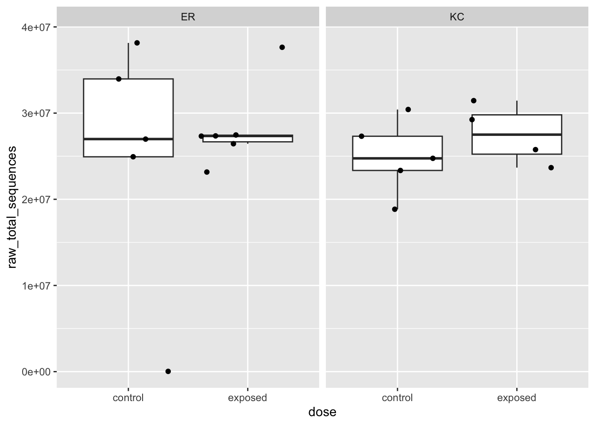
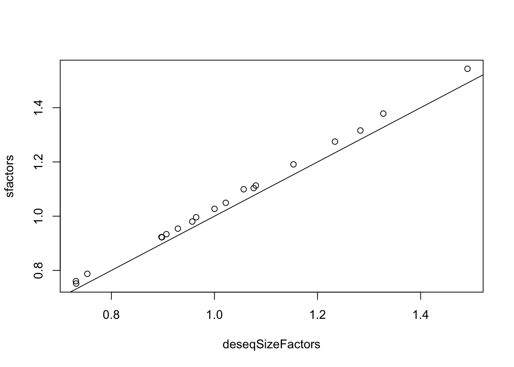
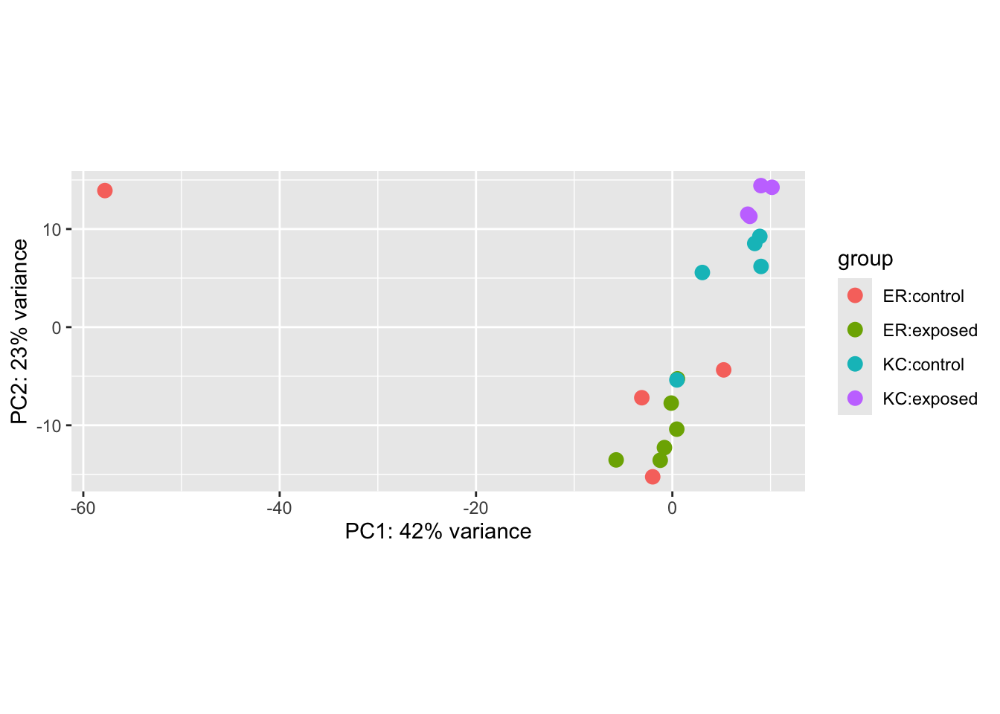
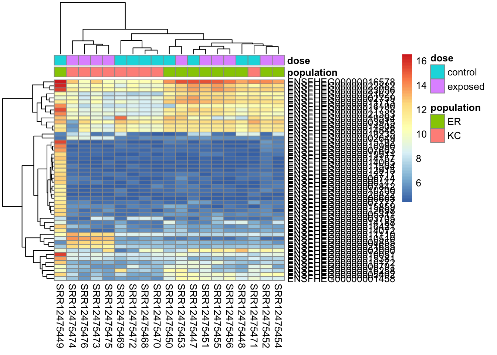
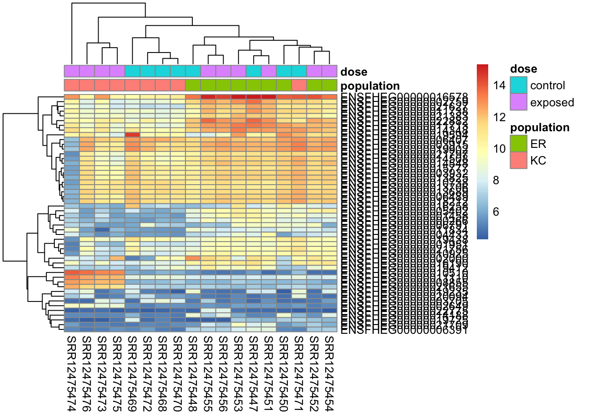

In the previous chapter you cloned the git repository to your local machine, copied the count data into it, and started a new RStudio project. We’re going to start with that project now.
If you’ve got RStudio open, you should close that project without saving the workspace and reopen it. As both we and R for Data Science have previously recommended to you, saving R workspace objects or working on more than one project in a single workspace can lead to mistakes and irreproducible analysis down the line! Always develop your code in one or more R scripts that you save, work on a single project in a given workspace, and regularly quit without saving the workspace and re-run the analysis code to make sure it works as expected.
As we work through the next three chapters, use the following code chunks as the basis for a script you create in RStudio to reproduce the entire analysis. In the next module, we’ll learn how to create documents of mixed text and code that we can render into reports explaining data and results.
Before we get started, also copy the directory results/03_align/samtools_stats from Xanadu into your local project directory. It contains some of our alignment QC data from samtools stats in tabular form.
21.1 Initial QC of count data
Start by repeating the steps to read the data in.
# load packageslibrary(tidyverse)library(DESeq2)# read in and manage metadatasmeta <-read.csv("../../metadata/SraRunTable.txt") %>%mutate(population=str_replace(population, "Eliza.*", "ER")) %>%# change population names to be simplermutate(population=str_replace(population, "King.*", "KC")) %>%# change population names to be simplermutate(pcb_dosage =case_when(pcb_dosage ==0~"control", pcb_dosage >0~"exposed")) %>%# change pcb dosage to control vs exposedfilter(population %in%c("ER","KC")) %>%select(Run, population, pcb_dosage)# create sample tabledirectory <-"../../results/04_counts/counts"sampleFiles <-list.files(directory, pattern =".*counts$")all( str_remove(sampleFiles, ".counts") == meta[,1] )
# read the data in:ddsHTSeq <-DESeqDataSetFromHTSeqCount(sampleTable = sampleTable, directory = directory, design =~ population*dose)
21.1.1 Mapping QC data
Next we’re going to read in and examine some of our mapping QC data. The row and column names are ugly, so we’re going to do a little processing as well. The stringr package has a series of functions for working with character strings. str_remove() lets us remove text matching a regular expression. The tidy style of working with data looks down on rownames on data frames, so we’ll put our rownames (the sample IDs) into a column as well.
# read table, transpose it so samples are rowssn <-read.table("../../results/03_align/samtools_stats/SN.txt", header=TRUE, sep="\t") %>%t()rownames(sn) <-str_remove(rownames(sn), ".*align.")colnames(sn) <-str_remove_all(colnames(sn), "[:()%]") %>%str_remove(" $") %>%str_replace_all(" ","_") sn <-data.frame(sampleID=rownames(sn), sn)
Ok, now let’s combine the metadata table with our samtools stats table and make some plots to investigate a little. Here we’re using left_join() to combine the two tables on the columns containing sample identifiers (the SRA accession IDs).
sn <-left_join(sampleTable, sn, join_by(sampleName == sampleID))
Now let’s look at some plots.
# a boxplot of total number of sequences as a function of experimental categoriesggplot(sn,aes(x=dose, y=raw_total_sequences)) +geom_boxplot(outlier.shape =NA) +geom_jitter() +facet_wrap(~ population)

We can see that there is an ER control sample with virtually no reads. Dropout of samples does happen occasionally as a result of errors during library preparation. We’ll need to remove this sample going forward. Let’s get that out of the way now.
# figure out which sample it is. arrange(sn, raw_total_sequences)[,1:5] %>%head()
sampleName
fileName
population
dose
raw_total_sequences
SRR12475446
SRR12475446.counts
ER
control
28524
SRR12475470
SRR12475470.counts
KC
control
18842730
SRR12475451
SRR12475451.counts
ER
exposed
23156486
SRR12475469
SRR12475469.counts
KC
control
23345290
SRR12475476
SRR12475476.counts
KC
exposed
23675940
SRR12475472
SRR12475472.counts
KC
control
24749454
# remove it. sn <- sn[sn$sampleName !="SRR12475446",]meta <- meta[meta$Run !="SRR12475446",]sampleTable <- sampleTable[sampleTable$sampleName !="SRR12475446",]ddsHTSeq <- ddsHTSeq[,colnames(ddsHTSeq) !="SRR12475446"]
Let’s check a few other aspects of the alignment QC before looking at the counts.
These very basic stats we’ve looked at before in other ways have pretty tight distributions (note the Y-axis bounds) and don’t look like they’re showing large systematic differences between treatment groups.
21.1.2 Examining the count data
Now let’s look at the count data, stored in the object ddsHTSeq. We could have read in each of the count files (they’re simple tab-delimited files) and merged them into one large count table (a matrix or data frame). Instead, we used a function from DESeq2 to get them all and put them in a specialized object.
Earlier we talked about basic data structures in R, and well, this one is quite different. Without getting into a ton of detail, this object is of type S4. The other major type of object is S3. Data frames are S3 objects. From a user perspective, one major feature of S4 objects it that they contain slots that, in our case, will hold various components of our analysis, of which the count data is only one.
Slots are accessed with @, rather than $ or [], and they may contain other S4 objects, or more familiar S3 objects. Let’s explore a little. There is no simple way in base R or tidyverse to make R spit out the object type (but see function otype() in package sloop). But we can see that this object is indeed S4 and has a number of class identifiers associated with it.
isS4(ddsHTSeq)
[1] TRUE
class(ddsHTSeq)
[1] "DESeqDataSet"
attr(,"package")
[1] "DESeq2"
We can use the function str() to show the structure of the object (the slots and their contents), and we can see this object is quite complicated.
There are 8 slots, but many of those slots contain other S4 objects with their own sets of slots. If we want to pull out the count data, we can find it buried in the assays slot.
You may have noticed above that when excluding our bad sample, we used bracket notation ([]) as if the entire object were simply a data frame with genes in rows samples in columns. We can do that because the developers of the package have implemented a separate subsetting function for [] that is applied to this class. That function traverses the various slots and their contents and subsets them all for you and returns an object of the same class.
It’s common in R for there to be generic functions (e.g. summary(), plot()) that look at the class of an object and then pass it off to a specific method to be applied to that class. We can see the methods associated with the class DESeqDataSet like this:
To list methods associated with classes or functions, and to extract their code, see this stackoverflow topic.
Ok, so enough digressing about objects and methods. Let’s actually look at our count data. First, double-check the dimensions with a generic function:
dim(ddsHTSeq)
[1] 23469 19
23,469 genes (rows) and 19 samples (columns), as we expect. It’s always good to do very simple checks like this. Then extract the count data:
rawcounts <-counts(ddsHTSeq)
This returns a matrix. If you do head() and tail() on this object, you’ll note that the fragment categories corresponding to unmapped fragments, ambiguous fragments, etc, from the original count files are not in the count table.
So what does our distribution of expression values look like? You probably know that gene expression has high dynamic range, meaning some genes have very low expression levels and some very high. What is the actual range? We can roughly see that by summing across all samples like this:
We can see that the 5% quantile is 2 fragments, meaning that 5% of all annotated genes have 2 or fewer fragments mapped, across all 19 samples. The median (50% quantile) is 1,511 fragments, while the max has 4.6 million fragments mapped, or over 3000x as many as the median. So from the median to the max we see a spread of 3 orders of magnitude.
What about all the genes with very low expression levels? We are unlikely to be able to detect significant differential expression at these genes because they are measured imprecisely. Is there a lower limit for being able to find differential expression? This is a difficult question and one for which DESeq2 implements a method to dynamically estimate for each comparison within a dataset. We’ll talk more about that in the next chapter.
Let’s get a clearer sense of the distribution of expression levels across genes. We can try printing a histogram, but the dynamic range with thwart us. It will be easier to see the distribution if we log-scale it first. That will drop all 0’s (log(0)=-Inf), so we can also add a pseudo-count of one to keep them in the plot.
We can see from these plots that the mode of expressed genes is between 1,000 and 100,000 fragments mapped.
Let’s also have a quick look at the distribution of zero counts by gene. We’re going to do this by taking advantage of the arithmetic interpretation of logical values.
We see pretty strong bimodality, where the vast majority of genes that are expressed are detected in all 19 retained samples.
Now we’ve got a pretty decent sense of the distribution of expression values. Let’s filter out some of the genes that we won’t have power to detect differential expression for. As we mentioned above, DESeq2 will also deal with this issue, so this step is optional, but we’ll do it here anyway. We’ll create a logical vector, keep, containing TRUE for every gene we want to keep, and then use that as a subset vector. We’ll keep genes present in at least 5 samples and with more than 20 fragments mapping across all samples.
This cuts our gene count from 23,469 to 20,820. This is a pretty light filter, so DESeq2 will likely remove more genes.
21.2 Preliminary visualization
Looking at the count data as we have above was mostly an exercise in helping you understand what the raw count data look like. Now we’ll see if we can get a little insight into how the samples compare to one another. We’ll look at PCA and heatmaps here. These will help us look for broad patterns in the transcription profiles that could help us flag problematic samples, or possibly see cases where our experimental factors have very large effects.
21.2.1 Count transformation for visualization
Before we can make these plots, we need to transform our data in two ways.
Normalization
Rescaling
21.2.1.1 Normalization
Normalization accounts for the fact that our gene expression measurements are compositional. This means that we don’t have absolute measurements, such as the number of transcripts per cell of a given cell type. We have counts of mapped fragments. These counts depend on the sequencing depth, so that samples sequenced more deeply have higher counts (though not necessarily higher expression).
More subtly, the counts also depend on the expression levels of other genes. Consider a case of two samples and two genes. In sample 1, you have 50 fragments to allocate to two genes (A and B) with equal lengths, and equal expression levels. They will both get 25 fragments. In sample 2, gene A has identical expression to sample 1, but gene B has increased expression 4-fold. If you again allocate 50 fragments to the 2 genes, A will get 10 fragments and B will get 40. Naively, both genes look differentially expressed, even though only one is. The challenge of normalization is put the two samples on equal footing, accounting for sequencing depth and compositional change.
In our example above, there isn’t enough information in the count data to normalize the samples. With a transcriptome of thousands of detectably expressed genes, however, there often is. If we make the assumption that the transcriptomes are broadly similar, i.e. most genes are not differentially expressed, we can effectively normalize them.
DESeq2 uses the method median-of-ratios to do this. This method is basically the following steps:
Create a reference expression profile by taking the geometric mean across all samples for every gene (the geometric mean is the n-th root of the product of n numbers).
For each sample, divide each gene count by its corresponding reference value.
Do some trimming and then get the median sample/reference value for each sample. These are the size factors.
To normalize, divide each count for each sample by that sample’s size factor.
DESeq2 does a little bit more processing than that, but code to do basically the same thing looks like this:
The apply() function allows you to apply a function across the rows (MAR=1) or columns (MAR=2) of a data frame or matrix. prod() multiplies its arguments together. In the expression rawcounts/gmeans, R divides the rawcounts matrix column-wise, and gmeans contains a value for each row.
DESeq2 will calculate these size factors for you as part of the differential expression analysis, but we want to get them now so we can visualize the data in advance. There’s a function to do this, and the function will return our data object, with the size factors buried in ddsHTSeq@colData@listData$sizeFactor.
ddsHTSeq <-estimateSizeFactors(ddsHTSeq)
We can extract the size factors like this, and then compare them to the ones we roughly calculated:
# extract factorsdeseqSizeFactors <-sizeFactors(ddsHTSeq)# plotplot(x=deseqSizeFactors, y=sfactors)abline(0,1) # add a 1-1 line

# fit and summarize linear modellm(sfactors ~ deseqSizeFactors) %>%summary()
Call:
lm(formula = sfactors ~ deseqSizeFactors)
Residuals:
Min 1Q Median 3Q Max
-0.008214 -0.004159 -0.001405 0.003113 0.011167
Coefficients:
Estimate Std. Error t value Pr(>|t|)
(Intercept) -0.002782 0.007111 -0.391 0.7
deseqSizeFactors 1.034129 0.006804 151.985 <2e-16 ***
---
Signif. codes: 0 '***' 0.001 '**' 0.01 '*' 0.05 '.' 0.1 ' ' 1
Residual standard error: 0.005904 on 17 degrees of freedom
Multiple R-squared: 0.9993, Adjusted R-squared: 0.9992
F-statistic: 2.31e+04 on 1 and 17 DF, p-value: < 2.2e-16
We can see these are very tightly correlated values, though our rough ones are systematically slightly higher.
Now we’ve got our size factors, how do we normalize the counts? We could do it manually, but there’s also an argument to the counts() function we used above:
normcounts <-counts(ddsHTSeq, normalized=TRUE)
21.2.1.2 Rescaling
When it comes to visualization, RNA-seq data a couple issues. As we saw above, individual genes have a very wide range of expression values. In heatmaps, this high range will dominate the plot, making it hard to see differences among samples. In PCA, the high expression genes will dominate the patterns we see. One approach to dealing with this is to log-scale the data (as we did with the summed counts). This introduces its own problems. First, there will be many more zero counts that drop out, and second, log-scaling low count genes (some of which will have fractional counts after normalizing) will make them very noisy. This will also cause problems with heatmaps.
To deal with this, DESeq2, has two methods for rescaling counts, the variance stabilized transformation and the regularized log transformation. They both approximately log2-scale the data, but they also smooth out some of the noise in low-expression genes. They also normalize the data. We’ll use the variance stabilized transformation here.
vsd <-vst(ddsHTSeq)
This is yet another S4 object. We can extract the counts with assay(vsd). We can visualize the relationship between the normalized counts and the transformed counts. Note that for low counts, the log2 relationship doesn’t quite hold.
Now that we’ve talked about transforming our count data, we’re going to do principal component analysis. PCA is a method for reducing high dimensional datasets (in this case we’ve measured gene expression at 23,000 genes) down to a few synthetic variables capturing major axes of variation. Plotting the principal components can be extremely useful in identifying patterns among samples. When experimental factors have large impacts on many genes, they will often be seen in clustering of samples in a PCA. Likewise, if there are other factors structuring samples, such as population of origin effects, they can turn up. From a QC perspective, batch effects and problematic outlier samples can also sometimes be identified.
DESeq2 has a wrapper function for doing PCA from an object containing transformed counts. By default it uses the 500 genes with the highest variance in expression among samples.
plotPCA(vsd, intgroup=c("population","dose"))

A useful feature of PCA is that we can tell how much of the total variation in the data is explained by the PCs. In this case, we see PC1 explains a whopping 42% of the variance. A single sample
We can immediately see a few major features in this plot. The most obvious one is that a single sample is off on its own on PC1. This is a pretty clear case of a sample being an outlier. Something unique has gone wrong with this sample, and ultimately we’re going to have to remove it from the analysis. This wrapper function makes it a little challenging to figure out which sample is the outlier, so we’re going to extract the PCs and remake this plot ourselves with ggplot, and a new package you’ll have to install, ggrepel. ggrepel will add labels to the points on the plot
The plotPCA() function allows us to return the data for the plot, rather than make it. The percent variation explained is stored in an attribute of the data frame. Attributes are occasionally used to attach metadata to objects in R, and can be retrived with attributes() or attr(obj, attribute_name).
Now we can see that a control ER sample is our outlier: SRR12475449.
Setting aside our outlier, we can see that in this case, our population of origin effects are dominant on PC2. We can, however, see a single control KC sample clustering with ER. This could be a sign of sample mislabeling, but we would have to dig a little deeper to confirm that, probably by looking at genetic variants (which we won’t do in this course). The separation is not so extreme, and the sampling of individuals not deep enough that it’s not inconceivable that there would be some messiness in the clustering. If we see further inconsistencies with that sample later we’ll revisit it.
Finally, if we look closely at the cluster of KC samples (but not ER!) we notice that the control and exposed samples seem to be clustering. This is a hint at what we’ll find in the statistical analysis.
21.2.3 Heatmaps
A heatmap is a common, but somewhat tricky method for visualizing expression data. It generally allows the visualization of many continuous variables measured across samples or groups. Before explaining further, let’s look at one. We’ll use the package pheatmap, so you’ll need to install that first.
library(pheatmap)# create a metadata data frame to add to the heatmapdf <-data.frame(colData(ddsHTSeq)[,c("population","dose")])rownames(df) <-colnames(ddsHTSeq)colnames(df) <-c("population","dose")# find genes with highest variance in expressionrv <-assay(vsd) %>%apply(., MAR=1, FUN=var)genes50 <-order(rv, decreasing=TRUE)[1:50]# make the heatmappheatmap(assay(vsd)[genes50,], cluster_rows=TRUE, show_rownames=TRUE,cluster_cols=TRUE,annotation_col=df )

In this heatmap we’ve selected the 50 genes with highest variance among samples (after normalizing and transforming). Each cell in the heatmap is colored by the transformed expression value for a single gene/sample. The rows represent genes and columns represent samples.
The genes and samples have been clustered by similarity. It’s possible to alter the distance metric and clustering algorithm within the pheatmap() function. The default distance is “euclidean” so genes will tend to cluster by overall expression level first. This will make plot with consistent blocks of color, but it won’t cluster genes with highly similar expression patterns. The Spearman correlation method will cluster things by expression pattern, but it will look messier if there are large differences in expression among genes in clusters.
We can see pretty clearly this figure reiterates the PCA results. Sample SRR12475449 has a dramatically different transcriptional profile than the others. After that, we see clustering by population (except that one KC sample) and then within KC clustering by treatment.
21.2.4 Remaking our plots after filtering
Let’s remove our problematic sample and remake the plots. Removing samples can be a fraught process. You don’t want to bias your findings by removing legitimate results, but on the other hand, it is not uncommon for errors in library preparation, sample handling, or the experiment itself to result in problematic samples. In an ideal world, we would track down the sources of problems, but sometimes we need to just make a decision and move forward. This is one of the best arguments for including more than the bare minimum of replicates in an experiment.
Note that if we had a list of sample names we could use the %in% operator. For example !(sn$sampleName %in% c("SAMPLE1","SAMPLE2")), rather than using the != operator. You can get help for operators in R with
Now we have a much better looking plot. You may be a little confused that PC1, which now separates our populations as PC2 did before, explains 41% of the variation, where PC2 only explained 20% before. This is mostly because the percent variation explained depends on the observed data, and there is a lot less total variation in the data now that we’ve tossed that outlier sample.
To make the heatmap:
# create a metadata data frame to add to the heatmapdf <-data.frame(colData(ddsHTSeq)[,c("population","dose")])rownames(df) <-colnames(ddsHTSeq)colnames(df) <-c("population","dose")# find genes with highest variance in expressionrv <-assay(vsd) %>%apply(., MAR=1, FUN=var)genes50 <-order(rv, decreasing=TRUE)[1:50]# make the heatmappheatmap(assay(vsd)[genes50,], cluster_rows=TRUE, show_rownames=TRUE,cluster_cols=TRUE,annotation_col=df )

When we look closely at this plot we see it looks much cleaner now. We do, however, see sample SRR12475474 looking a little outlier-y. It’s not very extreme, however, and we don’t want to get too crazy excluding samples. This kind of much slighter heterogeneity does not necessarily indicate a problem, particularly with genetically diverse outbred study subjects, as we have here. You might take a more stringent approach if you were working with genetically homogeneous cell lines in a tightly controlled experimental environment.
21.3 One last important point about QC
Sample mix-ups in the field or lab are not uncommon. In some experiments, knowledge of characteristics of your samples can allow you to make predictions about them that you can check in the count data. We saw above that our samples tend to cluster by population in the PCA, and that we had one individual clustering with the wrong population. We hand-waved this away in this particular case by saying that these are closely related populations with a lot of variability, and it’s not impossible a KC sample’s transcriptional profile could randomly look like an ER sample’s. Though in many cases, samples clustering with the wrong group will be much more unambiguous evidence of a problem.
Another really useful thing you can do in many systems is to cross-check morphologically assigned sex with mapping rates to sex chromosomes, or the expression of sex-biased genes. Assigning a morphological sex is often easy (particularly in mammals), and morphological sex in many species is very strongly determined by genotype, and/or has consequences for gene expression. If you know something about sex determination or sex-biased expression in your species, you can use that as in an additional QC step to ensure your samples are what you think they are. It is possible for genotype to be inconsistent with morphological sex for biological reasons (as opposed to sample mix-ups), but this varies by species. In most mammals it is quite rare, though not unheard of. In many frogs, it’s quite common. You’ll have to calibrate your expectations for your study system.
In this dataset, we don’t have morphological sex recorded. The fish are embryos, and though it may be possible to identify primordial gonads at this developmental stage, it would be difficult. However, we do know that there is a paralog of the gene AMH is very tightly linked to sex, having only ever been observed in morphological males. The paralog is not present in this assembly, so reads derived from it map to the original copy. If you look at the gene ENSFHEG00000001997 in IGV for samples SRR12475447, a male, and SRR12475448, a female, you’ll see that some have reads from SRR12475447 have several apparently “heterozygous” sites not shared by SRR12475448 that are due reads from the male-linked AMH paralog. If we had been working with adult fish with known morphological sex, this would be a useful QC step.